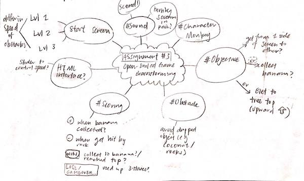
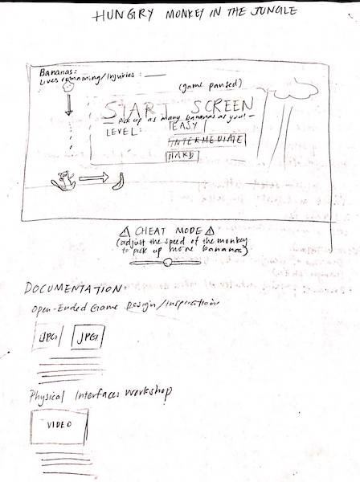
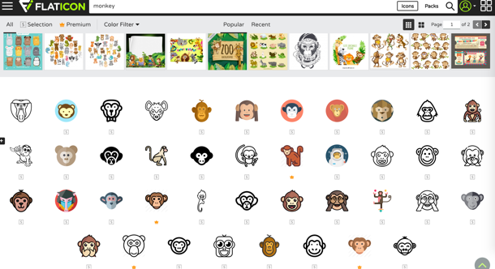

I started on my open-ended game assignment by brainstorming what kind of game I would like to make. I have been binging Planet Earth recently so I decided to design a jungle-themed game where the animal must collect as much food as it can. I like monkeys and bananas particularly, so I chose to use a monkey as my main character. Then, I brainstormed on how my game should be played, which included details of my starting screen, objective, obstacles, user interface, scoring, sound, etc.
  My group created our own physical interface by connecting the Makey Makey controller to the computer as a keyboard. We used different methods to design creative physical interface to control the movement of our character in the game. These methods are made available by running conductive material (e.g. PlayDoh, and Graphite (handdrawn pencil marks) between an input port and the ground to complete a circuit and stimulate the key press. First, we used a PlayDoh molded interface to play Tetris. In the two videos, we used pencils (graphite) to construct our own controller: a hand-drawn interface, allowing the user to stimulate the keys to play Pac Man and the UFO game (from class exercises).